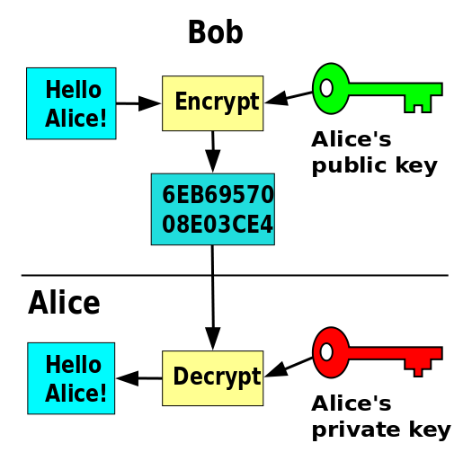

From the archive · Originally published September 28, 2016. This article reflects its original publication period and has not been substantively updated. Laws, procedures, and technology may have changed. Author and contact information are current.
Over the past few years, you may have seen one of many news stories about something called Bitcoin (). Here are just a few of them:
- L.A. hospital forced to pay $17,000 in bitcoin ransom to get medical records back after computer hack
- Winklevoss Twins Win Approval to Open Bitcoin Exchange
- Owner of Bitcoin drug market solicited a murder for hire, government alleges
- Bitcoin’s not money, judge rules as she tosses money-laundering charge
- Bitcoin Plunges After Hacking of Exchange in Hong Kong
Based on what usually makes the news, you may associate Bitcoin with illicit or otherwise negative activities. But, in my view, Bitcoin has some serious potential, and it could even be a revolutionary technology. So, if you’re interested in learning a little bit more about Bitcoin, read on…
What is Bitcoin?
Bitcoin is a digital-only currency that is managed by a collective of people on the internet that can be exchanged for fiat money (e.g., Dollars, Pounds Sterling, etc.), goods, or services. In other words, it’s currency, in that you can buy things with it, but it is not the official currency of any country (and there is no corresponding paper money). Bitcoin works through a network of computers running a “distributed ledger” which record and confirm transactions using cryptography.
Let me explain a bit more.
Bitcoin is Digital
Bitcoin is “digital” in the same way that your bank account is “digital.” In other words, you can check your bank balance and transfer funds using computers and without carrying cash around. But, your bank account is not digital only because you can go to the bank and withdraw cash. However, with Bitcoin, there’s no analogous paper currency to withdraw. So, it’s digital only.
Distributed Ledger (aka the “Blockchain”)
A “distributed ledger” just means that there is a group of computers run by many different people that records Bitcoin transactions. When you write a check or use your debit card, payment processing may be handled by a number of different computers working together; but, ultimately, your bank balance is determined by a centralized system. In contrast, Bitcoin is decentralized. With Bitcoin, there is a large network of computers on which anyone can post a transaction, which is then verified as authentic and recorded on the ledger by all of the many computers which have a copy of the ledger. So it’s a distributed ledger. Using Bitcoin terminology, this ledger is called the blockchain. If you want to know a little more, the Wall Street Journal has a pretty good explanation of Blockchain technology. And, to be clear, the concept of a blockchain is not just being used for Bitcoin. The Blockchain itself is a disruptive technology.
Public Key Cryptography
Bitcoin uses public-key cryptography to verify transactions as authentic. Public key cryptography is a computer-implemented mathematical technique that (1) allows the holder of a public key to encrypt a message that can only be decoded by the holder of the private key (i.e., message encryption); and (2) allows the holder of a private key to “sign” a message so that the holder of the public key can verify that the message could only have come from the holder of the private key (i.e., message signing). Using these two concepts, two people can securely send messages back and forth. This technology has been around for years. It’s part of what allows you to conduct secure transactions on websites. It’s also what Edward Snowden used to securely communicate with reporters. However, with Bitcoin, the technology is now being used in a new way.

Bitcoin uses these techniques to verify transactions on the blockchain (i.e., Bitcoin being transferred from one address to another). Each Bitcoin address has a public key and a private key. When a computer posts a transaction to the blockchain, the private key is used to “sign” the transaction. Since the public key is known, all of the computers on the network can verify that the transaction is authentic. This feature of Bitcoin – cryptographic signatures for transactions – allows anyone to participate without necessarily trusting other people on the network.
Pseudonymity
Bitcoin is pseudonymous. Some claim that Bitcoin is anonymous, but that is not entirely true. A Bitcoin address is a series of numbers and letters associated with a Bitcoin balance on the Bitcoin blockchain (ledger). So, you might liken it to an account at a bank. However, bank accounts are generally readily associated with a person (or business), whereas with Bitcoin, anyone can create a Bitcoin address using public key cryptography.
The longer explanation is that, as stated above, Bitcoin uses public key cryptography. When users create a Bitcoin address, they create a cryptographically secure private key/public key pair. The public key is then mathematically shortened to create a Bitcoin address.
In other words, anyone can create a Bitcoin address in the privacy of their own home, without having to go to a bank. Therefore, participants don’t necessarily have to reveal their identity. But, the owner of a Bitcoin address can become known or partially known (and there are some infamous ones). This could happen where an anonymous person accepting Bitcoin as payment becomes famous (yet still anonymous). In that case, because the address is publicly known for accepting payment, it is like a pseudonym. This happened, for example, when Ross Ulbricht operated an underground online marketplace known as the Silk Road. This could also happen if the owner of the Bitcoin address uses the address in a way that reveals his or her identity (for example, by buying something using Bitcoin from a vendor that also knows the payer’s identity).
Summary
At first, Bitcoin might not look like much. But, is has the potential to be a seriously disruptive technology. Because Bitcoin has the potential to be a very fast and secure way to transfer money, there are many opportunities for Bitcoin in developing or unstable economies. Also, Blockchain technology doesn’t necessarily need to be used for Bitcoin – and this technology could be used, for example, as a replacement for property records databases.
I’ll explain more about the practical benefits of Bitcoin in Part 2 of this post. But, for now, I’ll leave you with this.
Watch the referenced video on YouTube
and this